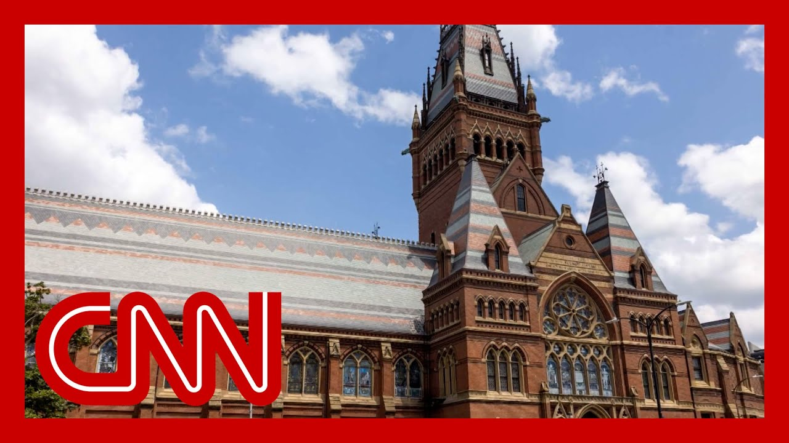

来B站一起耍【Global每日英语简报】
【"高度违法"：听哈佛校长对特朗普最新威胁的回应】
Summary: Harvard's president responds to Trump's threat to revoke the university's tax-exempt status, calling it illegal and warning of severe consequences for education and research institutions.
摘要： 哈佛校长回应特朗普撤销该校免税地位的威胁，称此举违法并警告将对教育和研究机构造成严重后果。

⏱️ Estimated Reading Time: 12 min
The Harvard president of Harvard is respondi to President Trump's announcemen seen here, that they will be taking away Harvard's tax exempt status.
哈佛校长正在回应特朗普总统在此宣布将取消哈佛的免税地位。
In an interview with The Wall St Journal, Alan Garber says this could pose an existential t if the government goes through with a plan to revoke our tax exempt status.
艾伦·加伯在《华尔街日报》采访中表示，若政府执行撤销免税地位的计划，可能构成生存威胁。
It would, number one, be high wiggle, wiggle unless there is some reasoning that we have not been exposed to that would justify this dramatic But tax exempt status is granted to educational institutions to enable them to successfully carry out their mission of education and for research universities of research.
首先，除非存在我们尚未知晓的理由能证明这一激烈举措合理，否则这将高度违法。但免税地位是为让教育机构顺利完成教育使命、研究型大学完成研究使命而授予的。
Obviously, that would be severely impaired if we were to lose our tax exemp And I should add, it would be destructive to Harva But the message that it sends to the educational community would be a very dire one, which that political disagreements could be used as a basis to pose what might be an existential thr to so many educational instituti And of course, this threat against Harvard also comes as the president signed an executive order attempting to begin the process NPR and PBS.
显然，失去免税地位将严重损害这一使命。我还必须指出，这对哈佛是毁灭性的。而它向教育界传递的信息将非常可怕——政治分歧可能被用作对众多教育机构构成生存威胁的依据。当然，针对哈佛的威胁出现之际，总统还签署了针对NPR和PBS的行政令。
And to that end, NPR's media correspondent David Folkenflik is joining our panel now. David, thank you so much for being with us, because this is the news. Let's start, with Harvard.
为此，NPR媒体记者大卫·福肯弗利克加入讨论。大卫，感谢参与，因为这是重大新闻。让我们从哈佛开始。
But of course, this is, in many ways, the thread that they are pulling here has to do with what many in the MAGA community view as elite institut how do you see what the president of Harvard is doing here? they are taking on the administration dir They of all universities in the United States have, the most name recognition, the most money, the most power to be able to do but we are not seeing every inst take the same approach.
当然，这本质上是MAGA群体眼中对精英机构的打压。您如何看待哈佛校长的行动？他们正直接对抗政府。作为全美最具知名度、资金和影响力的大学，他们有能力这样做，但并非所有机构都采取相同策略。
That's absolutely right. And I think there's there is connective tissue. There's a common theme here, as Certainly, the president's suppo would argue that these are elite institution which are somehow, aimed at agai functioning against them. What? Certainly, you could also say, is that these are institutions that serve as outside sources of informatio and oftentimes outside sources of accountability checks on official power by providing information that the public can absorb and process and figure out how they feel about the people acting in their name in Washington, in the white Hous whether Democrat or Republican.
完全正确。我认为存在内在关联。总统支持者会称这些精英机构实质上是反对他们的。但同样可以说，这些机构通过提供信息让公众判断华盛顿和白宫官员的行为，成为官方权力外的信息和问责来源。
And, universities, I think tanks research institutes and, yes, media outlets serve that functio So what you're hearing, the president of Harvard says, listen, this appears to him in the case that Harvard is maki is that this is illegal and that this is not following statutory requirements for how you go through, unraveling a relationship of funding Harvard in terms of a number of its research prog revoking its not for profit, tax But he's also talking broadly to say, to institutes not for profits that may take a more conservativ or just people who may care about such institutions.
大学、智库、研究机构和媒体都发挥这一功能。哈佛校长认为这违法且不符合撤销资助关系和免税地位的法律程序。他更广泛警告保守派非营利机构或关心这些机构的人士。
You know, don't think this stops It could go to anyone who who in some ways offends this pr this white House, or any of those to follow it. Congressman McHenry, I was listening to Rand Paul on the floor of the Senate. The other night. basically, you know, doing, to r Yeah, it's been a lot of Rand Paul many a night keeping me up past my bedtime because he wants to keep the Sen going on something or other.
别以为这仅针对哈佛，任何冒犯白宫的机构都可能遭殃。麦亨利议员，我前晚听到兰德·保罗在参议院发言。他总是用冗长发言拖延议程。
But in this particular case, he was talking. It was basically, you know, scho Rock, how a bill becomes a law i the power to, to fund things is supposed to to to lay with the Congress. Do you think it's illegal for Tr to try to remove Harvard's tax exempt status, or is it not? Well, has he done it? Like the question is for the the president to say he's going to do something. Is that a legal. Well, would it be illegal if he Oh, I think it's, quite complicated thing to revok institutions tax test.
但这次他引用《校舍摇滚》强调拨款权属国会。您认为特朗普撤销哈佛免税地位是否违法？目前仅是表态。法律上非常复杂。
I think it's a quite complicated And legally, what the Harvard president said is right now, there are a number of different that this administration's focus on these elite institution that have been culturally remove from the vast majority of Americ they have a problem. These elite universities have a and it is a problem that is poli Yes, because you have a super majority of American people thinking they're dramatically removed from the rest of the United Stat and not in the national interest They have a problem they have to And if they think they can just about the legal bits of their tax status and win on t they're missing. They're really missing the fight
哈佛校长指出现政府针对文化上脱离大众的精英机构。这些大学存在政治问题——多数美国人认为它们与国家利益脱节。若只关注免税地位的法律细节，就忽视了真正的斗争。
What the president does want is for them to pick a fight back That is what he is trying to dra more than anything else, and that services, politics, other institutions are quiet abo trying to work through it. That's probably smarter politics for them in the longer term with the American people. I think there's a bigger theory of the case here which isn't about Harvard or PBS or any of the other myriad places that he has directed his ire.
总统希望挑起对抗，而其他机构选择低调处理。我认为这反映了他更根本的意图——挑战任何独立于其权力中心的事物。
The theory of the case is this he does not like independence, anything that takes away from his center of power. He is trying to challenge and de And that is Harvard. That is PBS and NPR, and that is other institutions a And this you see over and over and over with him, that is the true threat. I'm not denying that there is a crisis of confidence in institutions writ large in this country, all of them left and right cente but that's not really what he's
他不喜欢独立性，试图削弱哈佛、PBS、NPR等机构。这并非解决普遍存在的机构信任危机，而是威胁它们的独立性。
He's not trying to redress that. He's not trying to say, hey, Harvard, be more open to th he's actually threatening their very independence. He's taking away money from them for the things that they do, such as research and PBS and NPR I mean, when you ask about wheth this is legal, I mean, the money is given through the C I mean, this is the way this is supposed to work.
他并非改善问题，而是威胁独立性，撤销研究等经费。拨款本应通过国会进行。
We've seen President Trump over and over and over again, write these decrees as if they're sort of royal decr And we haven't seen legislation. If you want to make this happen, take your chances in Congress. Try to pass a law. Talk to your senators and your congresspeople and see if that can happen. Just doing just signing something in a docu doesn't make it seems, basically taking it to court ins
特朗普屡次发布类皇家法令，但未经立法程序。若想实现政策，应通过国会立法而非签署文件，最终可能需诉诸法庭。
Ian Sams, how do you look at thi Because, you know, I think there is an argument to Certainly I've heard people in y make it to me in the aftermath of the election that some of what the congressman saying is right, that there are Americans out the swing voters in particular, who feel like Democrats lost the cultural thread. Is there any truth to that?
伊恩·萨姆斯，您如何看待？有观点认为民主党失去文化话语权，尤其对摇摆选民而言。
Yeah, there is. And he he's righ He wants a culture war. he was at my alma mater last nig the University of Alabama. And he put it succinctly. He said, it's the Crimson Tide versus the Harvard Crimson. He wants to create this us versu them mentality of America, where the elites are coming after the normal people.
确实。他想要文化战争，在阿拉巴马大学提出"红潮对阵哈佛红"，制造精英与大众的对立。
What he doesn't understand is there's a limit to the politics of that. I've been part of something called the working class project We've done to two dozen, three d focus groups in 12 states so far, exclusively with working class v most of whom supported President in the election. Michigan. We were just there last week. Michigan white men expressing co about the lawlessness of this administration, suggesting that he is acting a little bit.
但他未意识到其政治局限性。我们的"工人阶级项目"显示，连支持他的密歇根白人选民也批评政府的违法倾向。
We actually did a focus group of black men in Michigan, two who supported Donald Trump. One of them said he's giving dictator vibes. This stuff is not the political that he thinks it is there. There will be negative consequences for him, including among types of voters who some people in Washington, some people in the Beltway consu might not think are attracted to the issue or who are attracted the issue, aren't attracted to t And so so I think that I think that there's a little bit of a mess he's made for himself here.
支持特朗普的密歇根黑人选民称他有"独裁者气质"。这对其政治基础将产生反效果。
But certainly, you know, he's trying to tap into the sort elite anti institution mentality that is pervasive in our country It's interesting. Yeah. on the on specifically on Harvard, I'm very torn because I think Harvard has for some of the reasons Pat is getting it has invited a lot of these problems upon its If you actually read that report just a lot of really stupid, idiotic stuff going on at Harvar
他确实在利用国内反精英情绪。就哈佛而言，其自身也存在问题——报告中可见许多愚蠢行为。
Some of it, I think is unconstitutional, unl given where the Supreme Court is But I also have a real big probl with like, cutting funding for pediatric ca research to punish, punish the English department. And, I think that stuff kind of gets through. There's a bigger macro policy ar that no one's really talking about this country as a matter of sort of bedrock, foundational public policy, decided that we were going to have universities do a lot of our basic scientific research.
部分行为可能违宪。但用削减儿科研究经费惩罚英语系的做法也不合理。更宏观的问题是：美国基础科研主要依靠大学的政策共识正被动摇。
And now that and that policy has very well for us. And now the idea is to use that as a cudgel to force the education school to get rid of D-I stuff. That's not how you do basic rese And Harvard made a lot of mistak but this is a bad way to go.
这一政策曾成效显著，现在却被用作打压工具。哈佛虽有过错，但此非解决之道。